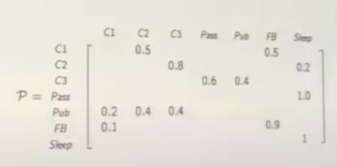
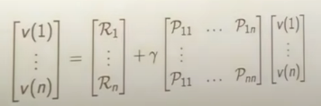
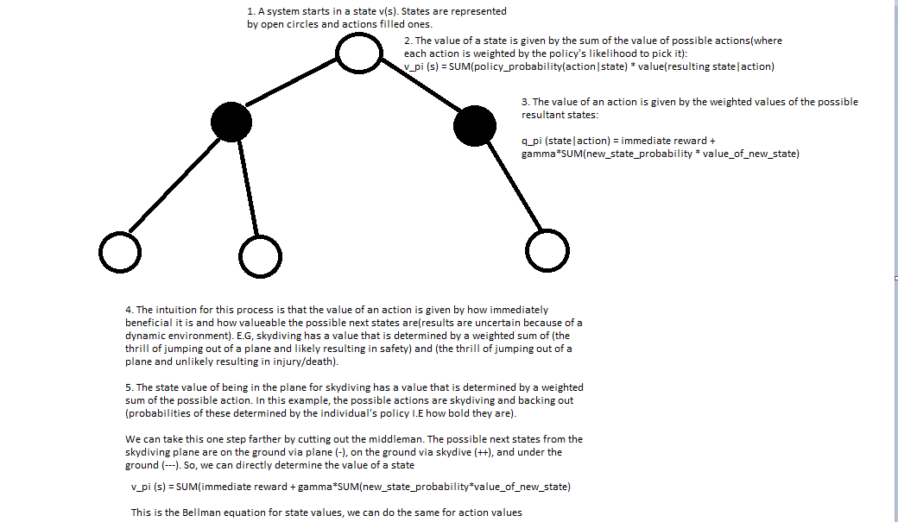

Up
Deep Learning and Reinforcement Learning
Overall Idea
A Markov process is one where the dynamics can be described entirely by a finite set of states and transition probabilities. In this system, the behavior at each timestep depends only on the previous timestep. (I.E state(t) depends only on state(t-1), not state(t-100)). In order to map a real
system to an MDP, you must define the problem with:
States S
Actions A
Transition function P(s' |s, a)
Reward function R(s, a, s')
Discounting factor gamma with horizon H (how far do we look ahead for rewards)
Starting state s0
Here, the goal is to maximize the expected reward:
$$max_{pi}E[\sum_{t=0}^H\gamma^tR(S_t, A_t, S_t+1)|\pi]$$
As an example, a walking robot could have:
States S: Joints position and velocities
Actions A: motor torques
Transition function P(s' |s, a): Robot dynamics (how do torques result in angles, like a state space model)
Reward function R(s, a, s'): Design choice, I.E. making forward progress could make the robot run
Discounting factor gamma with horizon H (how far do we look ahead for rewards): Hyperparameter
Starting state s0: Initial joint positions and such
Other model-able examples are cleaning robots, pole balancing, games, server management(how are requests managed), path planning, animal/person models.
This sort of system can be described by a 2d array of transition probabilities, where each row/column represents a state. Here is an example from David Silver's course, where C1, C2, ... are states and everything left blank has P=0:

In reinforcement learning, MPs become interesting when rewards are added(MRPs). For a given trajectory, the reward is defined as the discounted total reward from time-step t. This is formulated by summing the reward at the immediate timestep and the discounted reward at the following timestep:
$$G = \sum_{k=0}^{inf}\gamma^{k}R_{t+k+1} = R_{t+1} + \gamma R_{t+2}$$
So, gamma close to 1 doesn't discount further reward. Motivation for discounting is that our model is imperfect, so estimated future rewards are uncertain. Also not discounting can cause infinite return loops.
While the immediate rewards are random (determined by state probabilities), the value of each state is not. The value is given by the expectation of each state. The foundation of RL is the Bellman equation,
which says that the value of a state is given by the immediate reward at the current state plus the value of possible next states(weighted by their probabilities). In matrix form this is:

Intuitively, this makes sense. E.G, if a student is in a state with reward 1, and has a 60% chance of getting good sleep(state with value 2) and 40% chance of playing video games all night(state with value -3), the value of their state is:
$$V = 1(immediate reward) + .6*2 (sleep) + .4 *-3 (video games) = 1$$
With this equation, we can propagate terminal state values back to intermediate states. Also, the matrix can be solved directly(inverted), but this is a O(states^3) operation. For largy systems, we can instead:
Dynamic Programming
Monte Carlo
Temporal Difference Learning
MDPs are a case of MRPs where transitions are determined by decisions instead of chance. Here, actions are taken in accordance with a policy:
$$\pi (a|s) = P[A_t = a | S_t = s]$$
In non math terms, a policy assigns probabilities to state-transition actions based on the current state S. Deciding on a policy reduces an MDP to an MRP!
In an MDP, we evaluate a policy with a state-value and action-value function. Both of these have a Bellman Expectation decomposition. The state value function gives the expected return starting at a state s given a policy pi. In other words, this is the amount of reward you expect to recieve given your policy pi at a state
$$ v_{\pi}(s) = E_{\pi}[G_t | S_t = s]$$
The Bellman expectation equation tells us that the reward is equal to the immediate reward R(T+1) plus the discounted value of the next state using our policy pi at that state
$$ v_{\pi}(s) = E_{\pi}[R_{t+1} + \gamma v_{\pi}(S_{t+1}) | S_t = s]$$
The action-value function gives you expected return given a state s, action a, and policy pi.
$$q_{\pi}(s,a) = E_{\pi}[G_t | S_t =s, A_t = a]$$
The Bellman expectation equation tells us that the reward is equal to the immediate reward plus the discounted action-value of the next state
$$q_{\pi}(s,a) = E_{\pi}[R_{t+1} + \gamma v_{\pi}(S_{t+1}, A_{t+1}) | S_t =s, A_t = a]$$
We can unravel the expectation by incorporating our policy probabilities explicitly:

As a reminder, the Bellan equation gives us a means to solve for values in a low state system (second image on this page)
The tools so far have given us the ability to determine the value given a policy pi. However, the real goal is to find the optimal policy pi. The optimal policy has an optimal value function v* where the value of each state is greater than or equal to the value of that state in any other policy. This extracts maximum reward from the system. A similar optimal value function exists for action-values q*. Solving for q* solves the MDP. There is always an optimal policy that is greater than or equal to any other policy.
q* and v* can be determined from each other. v* from q* uses the Bellman optimality equation. Here, we look at the optimal action only (no longer an expectation):
$$v_{*}(s) = max(q_{*}(s,a))$$
q* is dependent on v*, but it does not use optimality since the outcomes of actions is environmentally determined. So, we get immediate reward and the average over the value of possible resultant states.
$$q_{*}(s,a) = R_s^a + \gamma * \sum_{s' in S} P_{SS'}^a v_{*}(s')$$
We can then relate v* to itself by plugging q* in to v*! (or get a similar recursive relation for q*). There is no closed form solution here because of the max. So, we use iterative methods:
Value Iteration/Policy Iteration
Convergence
Let V*(s) be the expected sum of rewards from s, acting optimally for infinite steps. V*h(s) is the same but for H steps. Then V*(s)-V*h(s) = Reward from H+1, H+2.....
The sum of these rewards can be written as an equation:
$$\gamma^{H+1}R_{H+1} + .....$$
Which is upper bounded by :
$$\gamma^{H+1}R_{max} + .....$$
Which is a geometric series:
$$\frac{\gamma^{H+1}}{1-\gamma} * R_{max}$$
As H gets larger, these extra rewards that the horizon method missed get very small due to the gamma term in the numerator. So, it converges quickly to the infinite horizon case.
An alternative proof is with contractions. The main intuition is that any two random value functions used as starting points get pulled towards the same, true value function. Since they get closer in this space, there is a contraction and convergence will happen.
Q values
Q values give the expected value of starting in a state s, takiing an action a, and then acting optimally.
$$Q(s, a) = \sum_{s' in S}(p(s'|s, a)*(R(s, a, s') + \gamma*Q^{max}(s', a'))$$
Value iteration can be done with Q values as well. In this case, the gridworld will have four options in each cell (one for each possible action direction) and each option has a separate Q-value